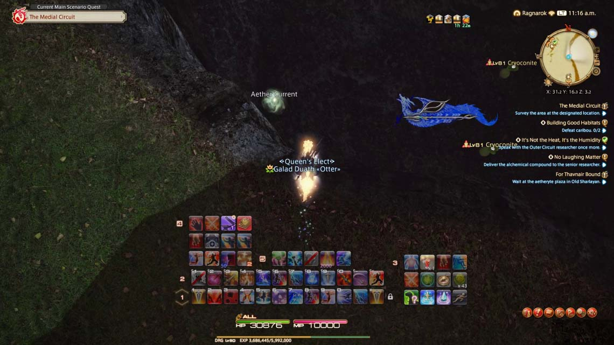

(
(
FFXIV Endwalker: How to Find, Unlock & Use the Aether Compass?
Aether Compass is moved, and many players have trouble locating it, so this guide tells you everything you need to know about finding, unlocking, and using it in Final Fantasy XIV: Endwalker.
What is the Aether Compass?
The Aether Compass is one of the critical items that will significantly need to be utilized in the game, helping players track down the Aether Currents that will set their mounts airborne.
Where to Find Aether Compass?

Aether Compass was before located in the Key Item section of the Inventory. It's moved to the Collection tab now. You are having trouble locating your Aether Compassess in the new Final Fantasy 14 expansion, you can:
1). Click on the Duty button, and it is located o the bottom-right corner of the screen.
2). You'll find the Collection tab under "Recommendations."
3). Click on it to access Collections.
4). Check out the menu for Aether Compass.
It was a critical item that could be added to your Hotbar for easier access when needed.
How to Unlock Aether Compass?
Upon completion of Divine Intervention, you will receive the Compass, an FF14 Heavensward Main Scenario Quest. You will receive this quest from the House Fortemps Steward in Fortemps Manor, and the Aether Compass will appear in the aforementioned Collections menu when it is finished.
However, if it is lost at any point, you can also be obtained it again by visiting Gilbrillont in Foundation within the Forgotten Knight. There is also another character you can see to get it again. This is Guafrid in Rhalgar's Reach, located in The Fringes, where players can once again grab the Aether Compass for utilization.
How to Use Aether Compass?

The Compass serves to point fans toward nearby Aether Currents, and using the item will do just that. When you click on it, a pop-up on your screen will let you know where the nearest Aether Current is in terms of direction and your distance from it.
Start heading in the direction that the Compass indicates, and keep clicking on it along the way to make sure you're moving in the right direction. Once you find the Current, interact with it by right-clicking on it, and you're all set.
To note, not all of them are found on the map. Some of them are obtained from completing side quests — the side quests you want to check for these are marked with the blue background and symbol. Some of these will not appear until certain main scenario quests, and side quests have been completed first. Even still, you should check your Compasses somewhat frequently while exploring to knock out all of the Currents found in that fashion.
How to Check Out All Aether Currents you have collected?
1). Go to the "Travel" menu.
2). Select "Aether Currents."
3). Or type "/aethercurrent" into your log.
4). It brings up the display of all Aether Currents you have collected.
That's all you need to know about finding, unlocking, and using the Aether Compass in FFXIV Endwalker. For more game guides, tips, updates, and to buy FF14 Gil, be sure to keep visiting BUYFFXIV4GIL.COM.